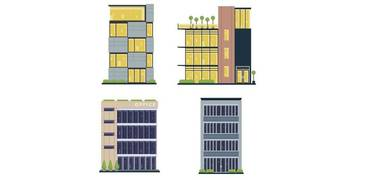
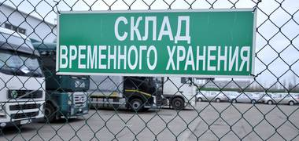

Новости

Компания «ЮТЛ» теперь полноценный участник оборота товаров системы «Чест...
Компания «Южные транспортные линии» (ЮТЛ), ведущий оператор по таможенному оформлению и перевозкам, стала участником системы «Честный знак».

Новые правила перевозки: электронные навигационные пломбы
С января 2025 года начинают действовать нововведения, связанные с перевозками определенной продукции по территории Республики Беларусь (РБ).

Инвестиционный бум на рынке мультитемпературных складов России: вызовы и...
Рынок складской недвижимости в России демонстрирует впечатляющую динамику.

Склады временного хранения под новым контролем: Госдума утвердила важные...
17 декабря 2024 года Государственная Дума одобрила законопроект, повышающий требования к складам временного хранения (СВХ).
Уведомление об изменении тарифов
В связи с экономической необходимостью, обусловленной уровнем инфляции, а также отсутствием индексации тарифов с 2019 года.
⚡️Вниманию участников ВЭД: в преддверии Нового Года ЦЭДы будут работать ...
🗓 В целях обеспечения бесперебойного оформления товаров перед новогодними праздниками с 26 по 28 декабря 2024 года ЦЭДы по всей России переведены на круглосуточный режим работы.
Повышении тарифов с 1 октября 2024 г.
Изменения тарифных планов на услуги ввоза автомобилей для личного пользования, вступили в силу с 01.10.2024.

Повышение НДФЛ заставит инвестировать в объекты коммерческой недвижимости
Поправки в налоговом законодательстве могут стать фактором роста объема инвестиций в коммерческие объекты недвижимости.
Цены на услуги 3PL-операторов повысились
Расценки на услуги 3PL-операторов повысились на 18-66%. Больше всего рост цен затронул сферу пикинга (66%). Почти не отстают от нее услуги по погрузке и разгрузке вручную.
Товарооборот между Китаем и Россией увеличился на 4,7%
Агентство ТАСС сообщило о росте товарооборота между странами на 4,7% в сравнении с 2023 годом. Сейчас он составляет 76 млрд долларов.
Тарифы на страхование складов повысятся
Стоимость страховки складской недвижимости в 2024 году увеличилась в 5 раз. Об этом стало известно на конференции UPGRADE Retail 2024.

Изменение тарифных планов на услуги СВХ ЦАТ
Изменения тарифных планов на услуги склада временного хранения центральной акцизной таможни для физических лиц, вступили в силу с 18.03.2024.
ООО «ЮТЛ» исполнилось 15 лет: отмечаем юбилейный успех
2 марта 2024 года компания ЮТЛ отмечает свой юбилей, 15-летие.
Экспериментальные бондовые склады упростят доставку товаров из-за рубежа
Минэкономразвития при участии иных профильных ведомств начало эксперимент по изучению новых способов ведения таможенных процедур.
Специальное предложение от МТС Банка. Валютный счет для бизнеса на супер...
Мы высоко ценим наших Клиентов и стремимся обеспечить Вам качественные и комплексные услуги в области таможенного оформления, грузоперевозок и оформления разрешительных документов.
На СВХ с 1 июля начался госконтроль импортных пестицидов и удобрений
В РФ было введено новое правило безопасной работы с такими веществами.
Правительство сделает требования к СВХ более жесткими
С 17 июля мобильные группы ФТС будут иметь расширенные полномочия.
Оформление СБКТС, ЭПТС. Списание утилизационного сбора
Оформляем все необходимые документы для транспортных средств, ввезённых на территорию РФ, для физических и юридических лиц.
Хранение порожних контейнеров
Рады представить Вам новую услугу и пригласить к сотрудничеству партнеров, интересующихся размещением и хранением порожних контейнеров на территории г. Новошахтинск.
Выездные занятия на т/п Несветайский для студентов Российской Таможенной...
9 ноября 2022 года на таможенном посту Несветайский генеральный директор ООО «ЮТЛ» Климов Роман Анатольевич провеел выездное занятие для студентов 5 курса
Добро пожаловать в правовое поле российского бизнеса
В связи с подписанием Договоров о принятии в Российскую Федерацию Донецкой Народной Республики, Луганской Народной Республики, а также Запорожской и Херсонской областей.
Первый выпуск трех контейнеров в Луганск
В связи с образованием в составе Российской Федерации новых субъектов, на бывших границах с ДНР и ЛНР отменен таможенный контроль.
Поставка автомобилей Chery Tiggo 4 Pro
На территорию СОХ ЮТЛ прибыла новая партия автомобилей Chery Tiggo 4 Pro, для проверки и дальнейшей отправки по автосалонам.
ТЛТ «Новошахтинский» - мы всегда рядом!
ООО «ЮТЛ» осуществляет консолидацию и кросс-докинг различных строительных материалов и любых видов техники для экспорта или временного вывоза в Луганскую и Донецкую Республики.